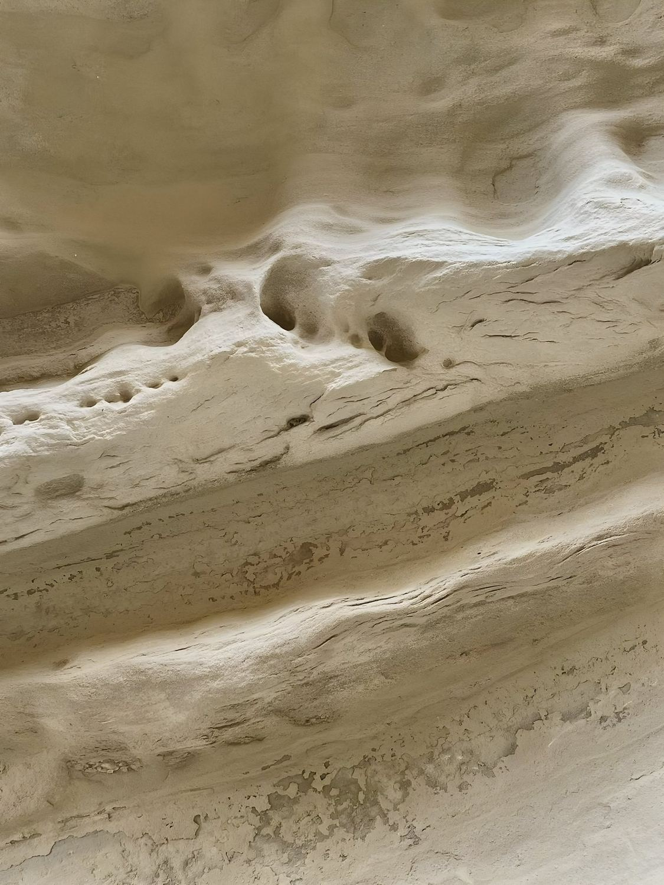
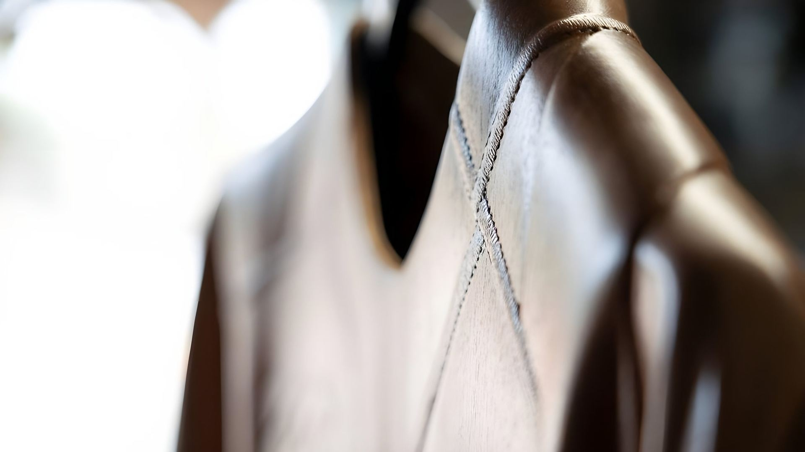
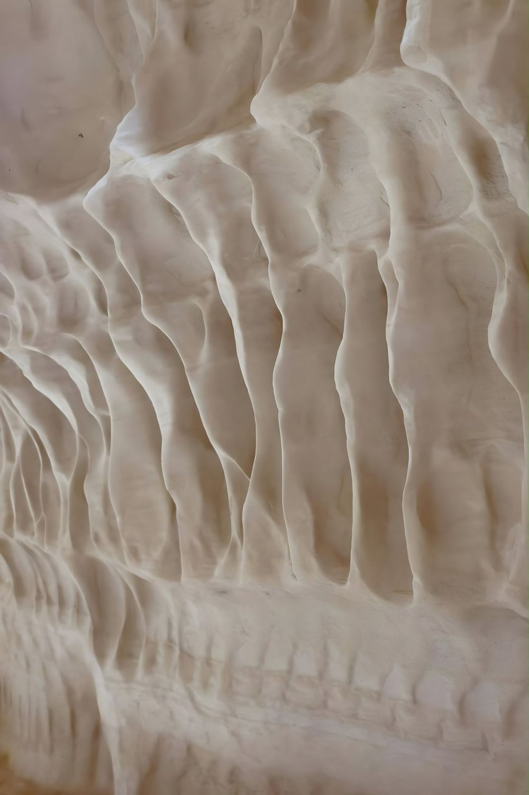
Ideas shaped into matter.Sculpture & Design Studio
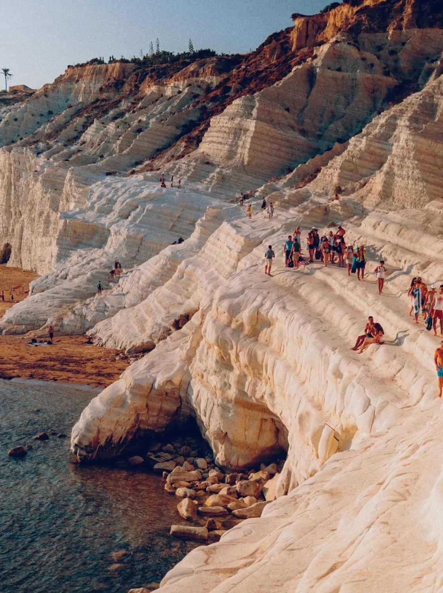
The Studio
Antoci is an Italian sculpture and design studio based in Ragusa, Sicily.
Working at the intersection of art, design and craftsmanship, the studio conceives and creates sculptural works and distinctive objects, bringing together creative vision, material exploration and hands-on making.
From the initial idea to the finished piece, each project is approached with attention to form, detail and purpose.
What We Create
From singular pieces to bespoke editions.
Antoci develops original sculptures, one-of-a-kind objects and commissioned works, alongside limited editions and custom series.
Projects range from collectible pieces and sculptural objects to creations conceived for brands, exhibitions, events and distinctive spaces.
Each commission is developed around its own identity, context and intended use.
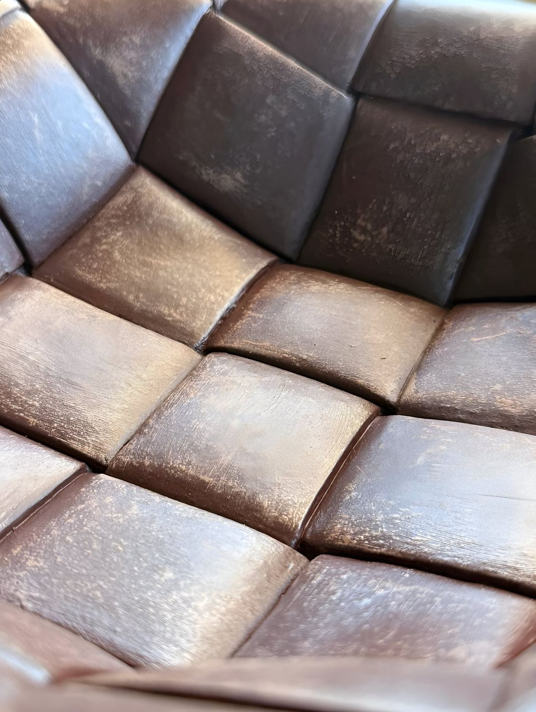
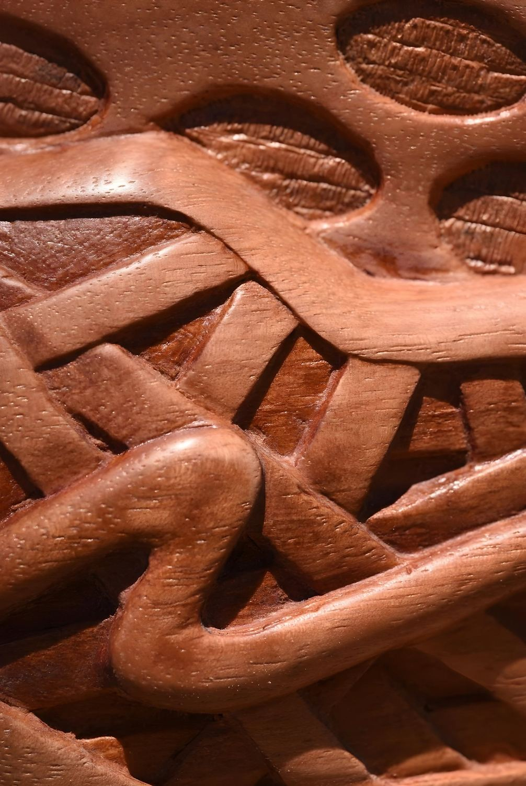
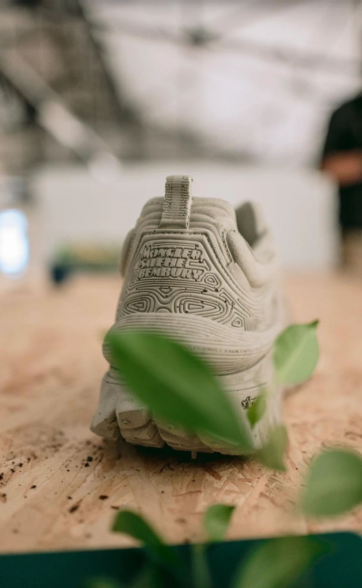
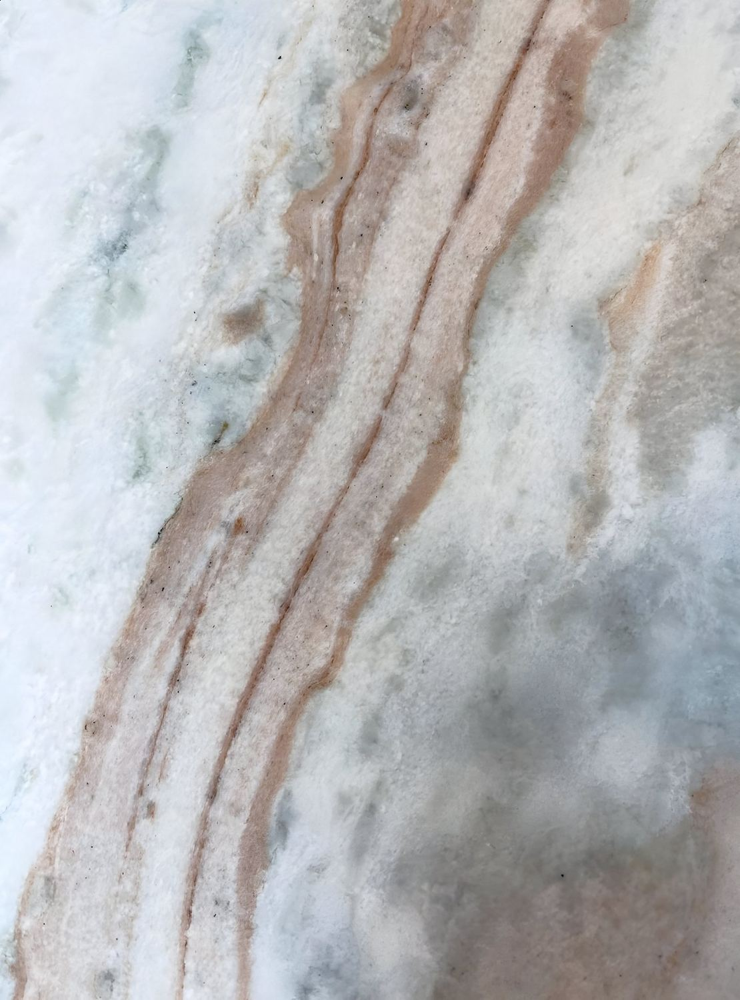
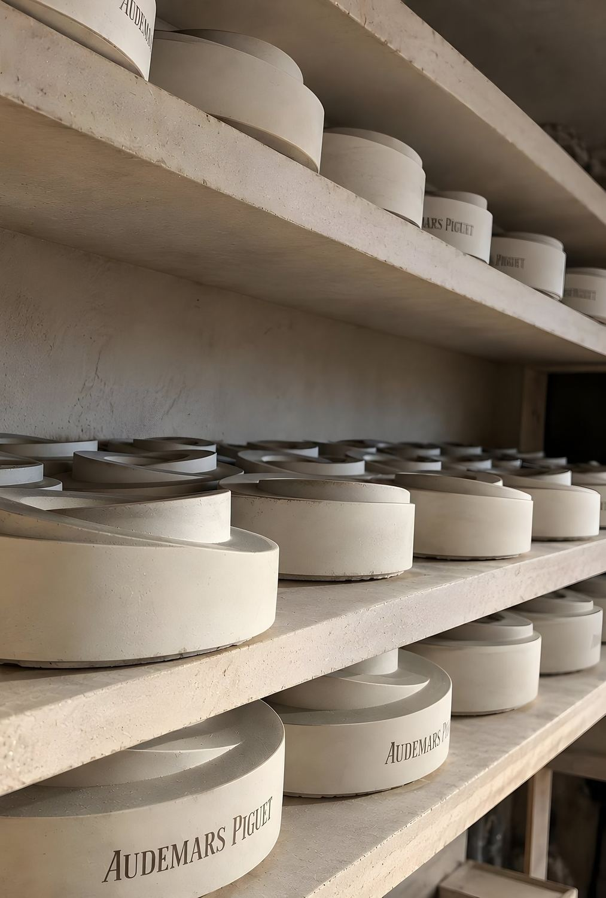
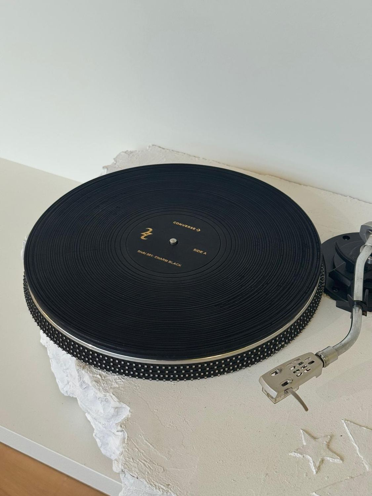
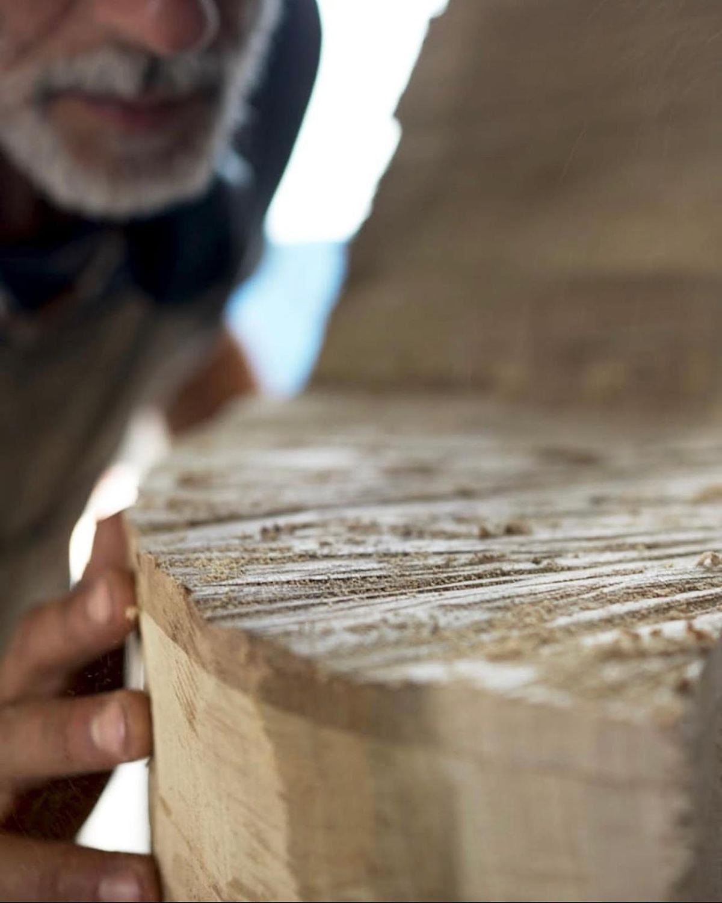
Material & Craft
Made in Italy.
Shaped by hand.
Rooted in its atelier in Ragusa, Sicily, Antoci explores the expressive possibilities of materials through sculptural practice and craftsmanship.
Wood, ceramic, stone and marble are among the materials that inform the studio’s work, with each project guided by the relationship between concept, form and material.
- Wood
- Ceramic
- Stone
- Marble